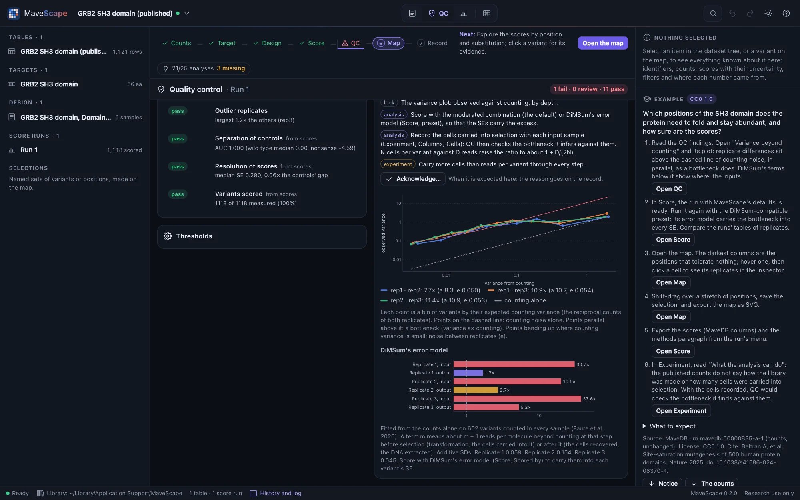
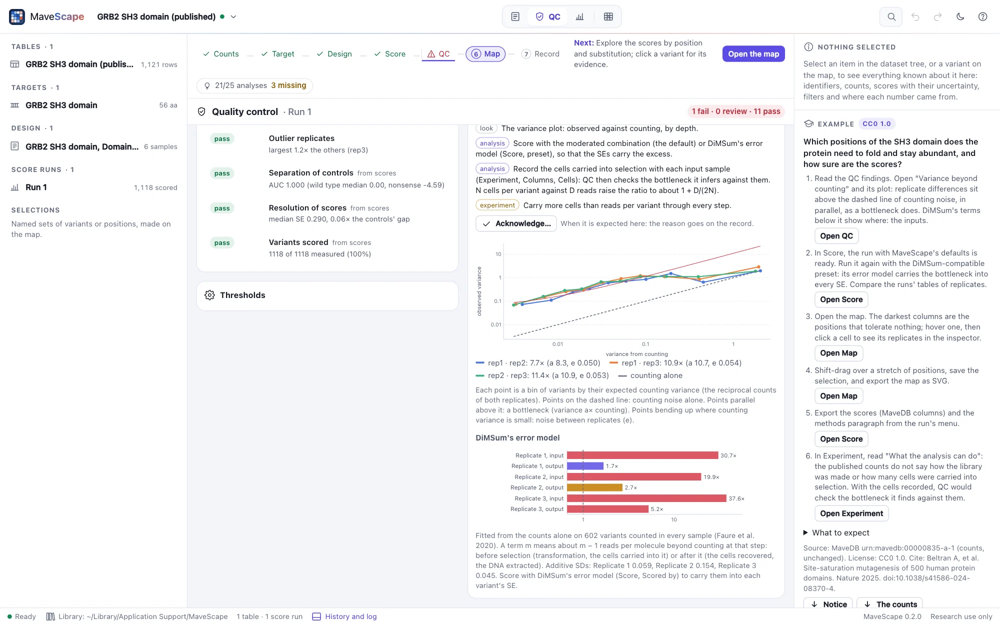
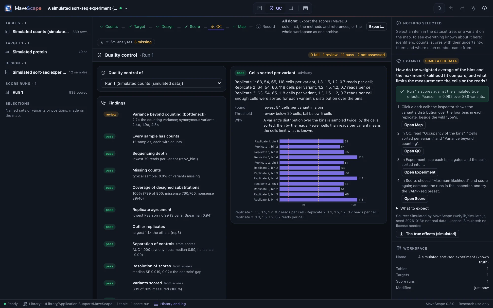
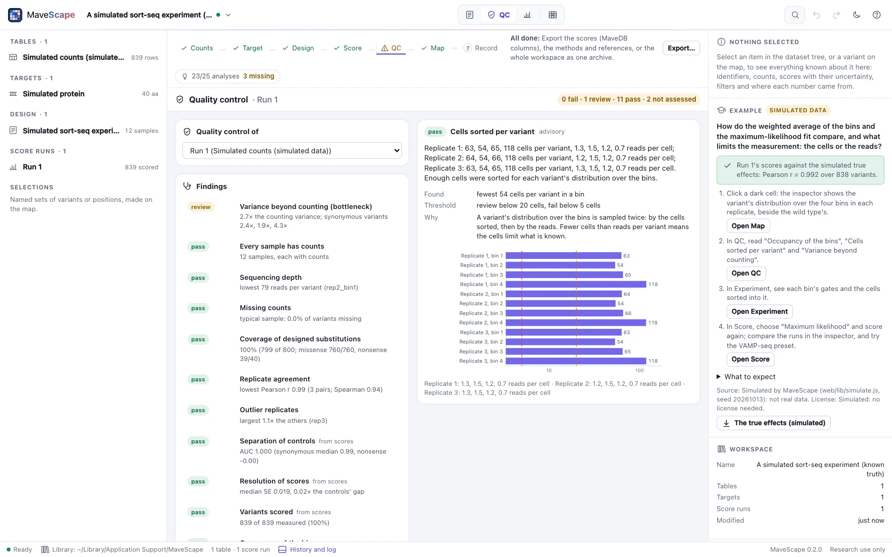
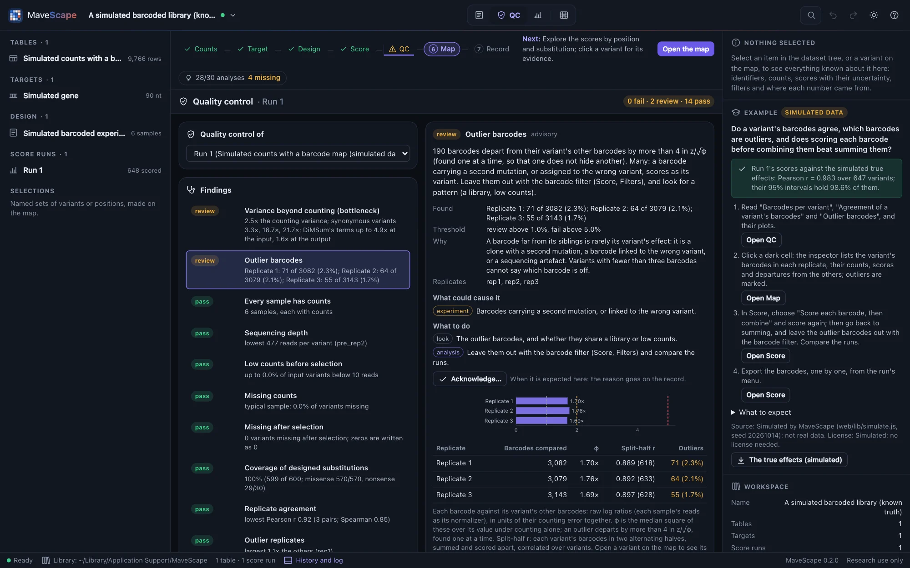
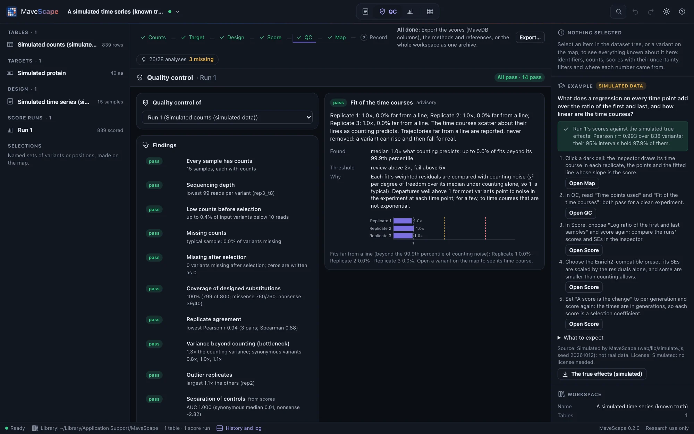
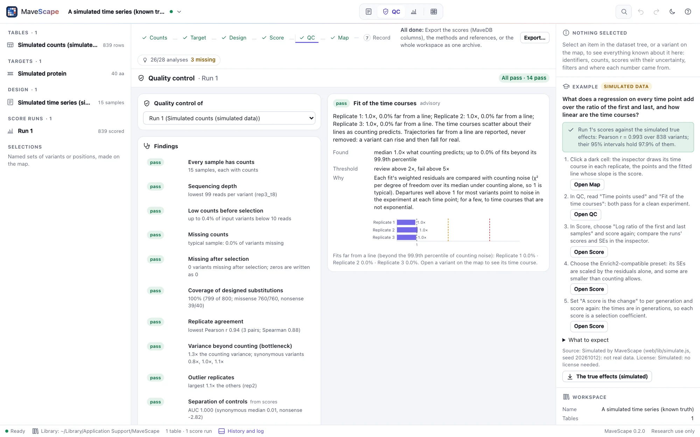
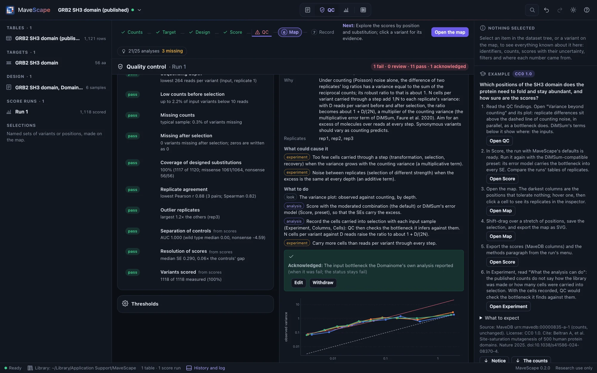
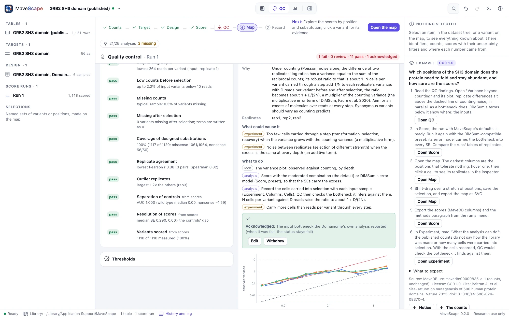

Quality control
Quality control says whether the experiment supports reliable scores. Each finding is pass, review or fail, with what was found, its threshold, why it matters and the plot behind it; the overall status sits beside the list, never instead of it.
The QC view


Quality control is of a score run, or of the counts and the current design alone, before scoring. Choose which at the top left. The findings come from the counts first; the last three need scores.
The findings
| Finding | What it checks | Review / fail |
|---|---|---|
| Every sample has counts | A sample with no counts at all: a missing file or a misnamed column (blocks scoring) | fail |
| Sequencing depth | Reads per counted variant, per sample | below 30 / 10 |
| Low counts before selection | Input variants below 10 reads | above 20% / 50% |
| Missing counts | Variants missing in a sample beyond the others | above 20% / 50% |
| Missing after selection | Variants that dropped out during selection but are written as missing rather than 0 | review only |
| Coverage of designed substitutions | Substitutions observed, by position and class; of those a library of single-base changes can make, when the design says it is one | below 90% / 50% |
| Replicate agreement | Pearson and Spearman correlation of the replicates' log ratios | below 0.8 / 0.5 |
| Variance beyond counting | Replicate differences against the variance counting predicts: above 1, a bottleneck or noise between replicates | above 2× / 5× |
| Outlier replicates | A replicate's leave-one-out variance against the others' | above 2× / 4× |
| Separation of controls | How well scores tell nonsense from wild-type-like controls (AUC), in the direction the readout gives; where late stops stop losing the function | below 0.9 / 0.75 |
| Resolution of scores | The median SE against the controls' gap | above 0.25 / 0.5 |
| Variants scored | Measured variants that pass the filters | below 80% / 50% |
| Occupancy of the bins (sorted bins) | Each bin's share of its replicate's cells, or of its reads when the cells are not recorded | below 5% / 1% |
| Cells sorted per variant (sorted bins) | The cells sorted into each bin per variant, when the design records them | below 20 / 5 |
| Time points used (time series) | Fits on fewer time points than the replicate has | above 10% / 30% |
| Fit of the time courses (time series) | How far the time courses scatter about their lines, over what counting predicts (median; 1 is typical) | above 2× / 5× |
Bottlenecks
Under counting noise alone, the difference of two replicates' log ratios has a variance equal to the sum of the reciprocal counts. MaveScape fits the observed variance as a × counting + e: a above 1 points to too few cells somewhere (a bottleneck multiplies the counting variance), and e to noise between replicates. Standard errors from counts alone then understate the uncertainty. The moderated combination (the default) fits the same model to every variant's replicates and carries it into each SE; REML's τ² takes up the excess only as far as each variant's own few replicates show it.
The cells recorded. When the design records the cells carried into selection from each input (and, if known, those recovered after it in each output; Experiment, Cells), the finding checks the bottleneck it infers against them. N cells add 1/N of a variant's frequency to its variance, against counting's 1/R for R reads, so for a pair of replicates the ratio should be about 1 + Σ(1/Nin + 1/Nout) / Σ(1/Rin + 1/Rout) over their samples (about 1 + D/(2N) for D reads per variant). Within 1.5× either way, the recorded cells account for the excess; above it, another step had fewer cells (transformation, recovery, DNA extraction) or the replicates differ beyond counting; below it, check that the cells recorded are those carried into each replicate's selection, not a total. On simulated bottlenecks recorded as they were made, the cells account for the excess in every pair; with noise between replicates, the replicates show more in 8 of 9 pairs; with a tenth of the cells recorded, less in every pair.
For an input and an output, the finding also fits DiMSum's error model to the counts, which says where the cells were too few: a multiplicative term for each input and each output, 1 for counting alone. Input terms well above the outputs' point to the steps before selection (transformation, the cells carried into it); output terms to those after it (the cells recovered, the DNA extracted). The finding's plot draws the terms and its explanation names the step. On simulated experiments with a bottleneck of N cells per variant, the input terms rise to about 1 + D/N for D reads per variant (1.7, 5.1 and 10.4 against 2, 5 and 11), and a bottleneck after selection raises the output terms instead. Score with DiMSum's model to carry the terms into every variant's SE.


Sorted bins
For sorted bins, replicate agreement, the variance beyond counting and outlier replicates compare each replicate's weighted average of the bins' values (with its variance from counting) in place of a log ratio, within each tile. Two more findings: Occupancy of the bins, since a nearly empty bin samples its variants coarsely, and Cells sorted per variant, since a variant's distribution over the bins is sampled twice, by the cells and then by the reads, and the scarcer limits what is known.


On factor IX, the replicates of each tile agree, but differ about 2,000× more than counting predicts: about 10,000 reads per variant per bin far exceed the cells sorted, which MaveDB does not record.
Barcodes
For a table of barcodes, the findings above use each variant's barcodes summed, and four more look at the barcodes themselves. Barcodes the map names: the share of reads in barcodes that name no variant (missing from the map, or given two variants by it). Barcodes per variant: a variant measured by one barcode cannot be checked against another. Agreement of a variant's barcodes: φ, how much more barcodes of one variant disagree than counting explains (few cells per barcode, or clones that differ), and the split-half r, each variant's barcodes in two halves scored apart and correlated. Outlier barcodes: those departing from their siblings by more than 4 in z/√φ, usually a barcode carrying a second mutation or linked to the wrong variant.

These come from the counts alone (raw log ratios, each sample's reads as its normalizer), so they are the same whatever the run's parameters. Tested on simulated libraries: clean, with clones that differ, with 12% of barcodes off their variant, with a map missing a quarter of the barcodes, and with one barcode per variant, each raising exactly its findings in three seeds.
Time series
For a time series scored by regression, two more findings. Time points used: a variant is fitted on the time points where it was counted, and points missing at the end of a time course are usually variants that dropped out and were written as missing; the slope then leans toward the wild type. Fit of the time courses: each fit's weighted residuals against counting noise, so that 1 is typical; well above 1 for most variants points to noise at each time point (a bottleneck at each passage), and the SEs, scaled by the residuals, include it.


On real data: BRCA1's E2-binding time series (MaveDB urn:mavedb:00000003-a-1) writes variants that dropped out in the last round as missing, so a quarter of its fits miss their last points; with its later samples' missing counts read as 0 ("Missing = 0" in the Experiment view), every fit uses every round and 595 more variants are scored. Its time courses scatter about 7× more than counting predicts, and those of its yeast two-hybrid assay about 30×.
Findings in context
A "fail" can be a failed experiment, an analysis that does not suit the data, or what the library or the assay makes expected. The next step differs. Every finding to review or failing says what could cause it, each cause marked as one of three:
- experiment: in the experiment or the counting;
- analysis: in the analysis;
- expected: expected from the library or the assay.
It also says what to do:
- look: the plot or table to inspect;
- analysis: the choice that would change it, and where to make it;
- experiment: what only another experiment can settle.
A finding not assessed says what it needs.


The findings read the design. Coverage of a library made by error-prone PCR or doped oligos is judged against the substitutions one base change makes from each wild-type codon (with a DNA target). Separation of the controls expects loss of function on the side the readout's direction gives. When the direction is not stated and the nonsense variants score on the other side, the finding says the direction may be the other way round. When the stops after some position score like the wild type, it names the position and suggests limiting the nonsense controls to the positions before it. For BRCA1's yeast two-hybrid assay that position is 93, in the region between residues 61 and 110 where the published scores change (The design).
Acknowledging a finding
When a finding is expected here (a library that cannot reach every substitution, a bottleneck the experiment's authors reported), Acknowledge… records why. The finding keeps its status, and the overall status stays the worst finding. The reason goes into the history, the methods paragraph, the QC findings export and the provenance. An acknowledgement holds while the finding is no worse than when it was acknowledged: a review that becomes a fail asks again. A blocking finding cannot be acknowledged. Headless runs take --acknowledge id=reason, and --strict does not fail on an acknowledged finding (Headless runs).
Thresholds
Every threshold is editable in the QC view and kept in the workspace; each change goes into its history and the methods paragraph reports the thresholds used. Reset to the defaults restores MaveScape's.
How the findings are tested
Simulated experiments with one problem each (poor replicate agreement, one failing replicate, a severe bottleneck, a low-count tail, a missing sample, and for time series a bottleneck at every passage) raise exactly their findings, and clean experiments (two populations, a time series and a sort) none, on three seeds; sorts with too few cells or a nearly empty bin raise theirs. The variance ratio follows a simulated bottleneck. Every finding the planted problems raise says what to do. A selection that enriches loss of function (inputs and outputs swapped) separates its controls with the direction stated, and fails, saying why, without it. A library of exactly the single-base substitutions passes coverage when the design says it was made by error-prone PCR. Validation has the details.